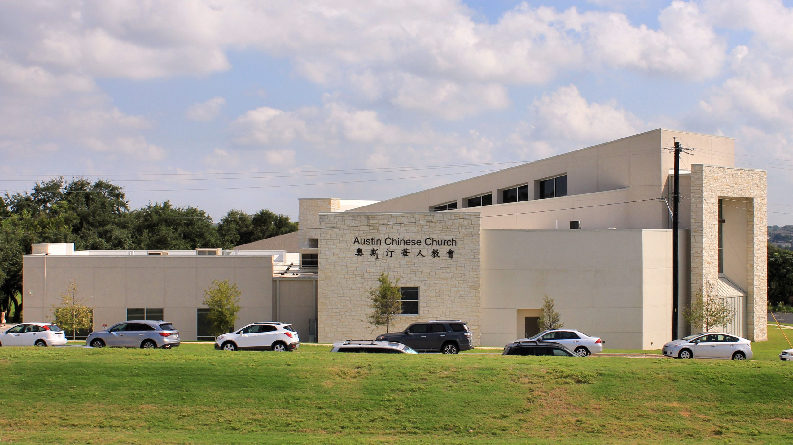

With the desire of reaching more English-speaking and Chinese-speaking people living in the southwest area of Greater Austin, Austin Chinese Church began using the facility of Cedar Creek Elementary School to offer an additional site for Sunday worship.
Currently, the Sunday service at ACC Southwest begins with a time of worshipping using Chinese and English bilingual songs that we invite all adults, youth, and children to come join us. Following worship, we will have separate English and Chinese sermons.
We look forward to having you join us.
— Pastor Tony Hsu
Our Children’s Program on Sundays has fun, interactive and biblically-based programming for children from preschool to 5th grade. The program continues from first hour through to the end of the second hour worship service.
Our Youth Ministry brings middle school and high school youth into a growing relationship with Jesus Christ through fellowship led by our counselors.
Our Adult Bible Fellowships offer the opportunity to mature spiritually through practical and relevant teaching on God’s Word.
The worship service at ACC Southwest begins with a time of worshipping using Chinese and English bilingual songs that we invite all adults, youth, and children to come join us in singing. Following worship, we will have an English sermon and Chinese sermon.
We strive to be a church community that not only worships together on Sundays, but also shares life together so that we can help each other mature as followers of Jesus.
